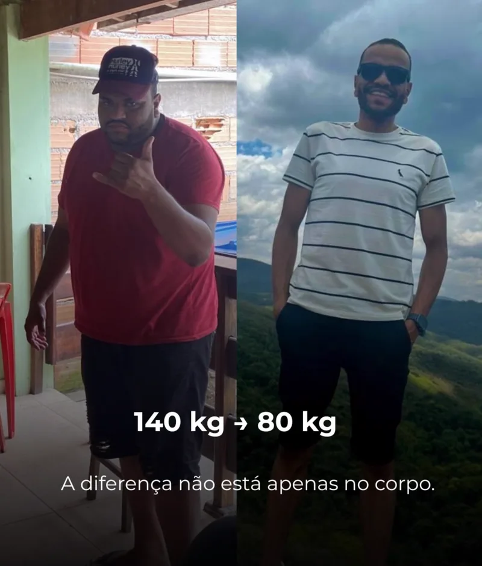

Emagrecimento inteligente
Estratégias alimentares compatíveis com a rotina e os objetivos de cada pessoa.
Hugo Mol Maron · Nutricionista · CRN-9 37282
Emagrecimento, saúde e performance com estratégias nutricionais personalizadas, desenvolvidas para sua rotina e seus objetivos.
Hugo Mol Maron Nutricionista · CRN-9 37282
Role01 / Para você
Sem fórmulas prontas: a estratégia nutricional é pensada a partir da sua realidade, dos seus horários, das suas preferências e dos seus objetivos.
Quero entender como funciona02 / O profissional
Hugo Mol Maron — Nutricionista
Formado em Nutrição em 2025 e com pós-graduação em Nutrição Esportiva em 2026, Hugo Mol Maron construiu sua experiência prática desde 2023, quando iniciou seus atendimentos no consultório da faculdade.
Com foco em emagrecimento, saúde e performance, sua trajetória é marcada pelo compromisso com uma nutrição estratégica, equilibrada e adaptada à realidade de cada pessoa.
Ao longo dessa jornada, participou da transformação de centenas de vidas, ajudando pessoas a buscarem uma relação mais saudável com a alimentação e seus objetivos físicos.
03 / O MaronFit
O MaronFit reúne estratégias de nutrição voltadas para o emagrecimento, a saúde e a performance, valorizando a individualidade e a construção de hábitos sustentáveis.
Estratégias alimentares compatíveis com a rotina e os objetivos de cada pessoa.
Nutrição direcionada para apoiar a prática de atividades físicas.
Foco no bem-estar e na manutenção de hábitos saudáveis.
Conheça a proposta do MaronFit e esclareça suas dúvidas.
Compreenda como uma estratégia nutricional pode ser adaptada às suas necessidades.
Receba informações sobre as opções de atendimento e os próximos passos.
05 / Histórias
Conheça experiências de pessoas que buscaram melhorar sua saúde, alimentação e qualidade de vida.

Arraste para o lado · passe o mouse para pausar
06 / Diferenciais
Atendimentos nutricionais realizados desde 2023, ainda durante a formação acadêmica.
Graduação em Nutrição e pós-graduação em Nutrição Esportiva.
Abordagem voltada à realidade, às preferências e ao dia a dia de cada pessoa.
Cuidado com saúde, emagrecimento e performance de forma equilibrada.
Programas
Seu próximo passo
Converse com Hugo Mol Maron e conheça o MaronFit.
Quero conversar pelo WhatsApp07 / Contato
08 / Dúvidas
Não encontrou sua resposta? Fale diretamente com o Hugo.
Tirar dúvida no WhatsAppO MaronFit é o projeto do nutricionista Hugo Mol Maron que reúne estratégias de nutrição voltadas para o emagrecimento, a saúde e a performance, valorizando a individualidade e a construção de hábitos sustentáveis.
Hugo Mol Maron é nutricionista, formado em Nutrição em 2025 e pós-graduado em Nutrição Esportiva em 2026. Realiza atendimentos desde 2023, quando começou no consultório da faculdade, e participou da transformação de centenas de vidas ao longo da sua trajetória.
Sim. O emagrecimento é um dos focos do MaronFit, sempre com estratégias alimentares compatíveis com a rotina e os objetivos de cada pessoa. A conduta é definida de forma individual, após a avaliação nutricional.
Sim. Com pós-graduação em Nutrição Esportiva, Hugo direciona a estratégia nutricional para apoiar a prática de atividades físicas e a evolução de performance.
As informações sobre formatos de atendimento, etapas de acompanhamento e valores são apresentadas diretamente pelo Hugo no primeiro contato. Envie uma mensagem pelo WhatsApp para receber todos os detalhes.
É simples: entre em contato pelo WhatsApp, conte quais são seus objetivos e receba as orientações sobre os próximos passos para iniciar sua jornada.
Você pode falar com o Hugo por qualquer um destes canais: